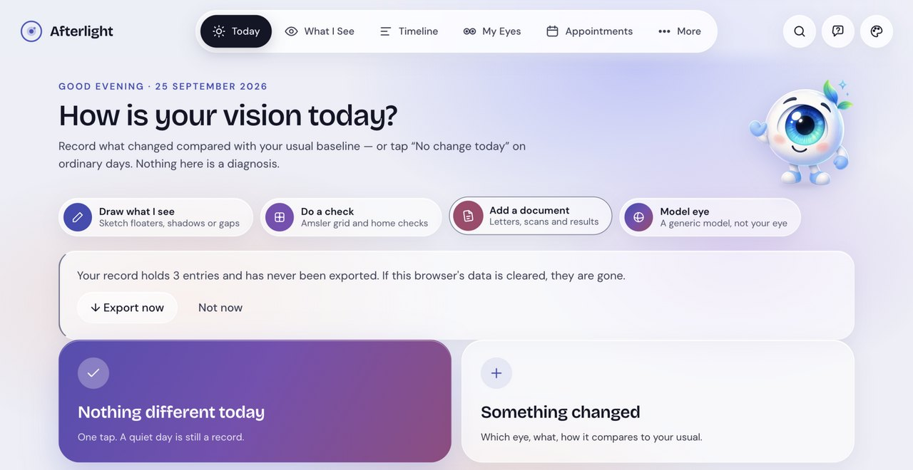
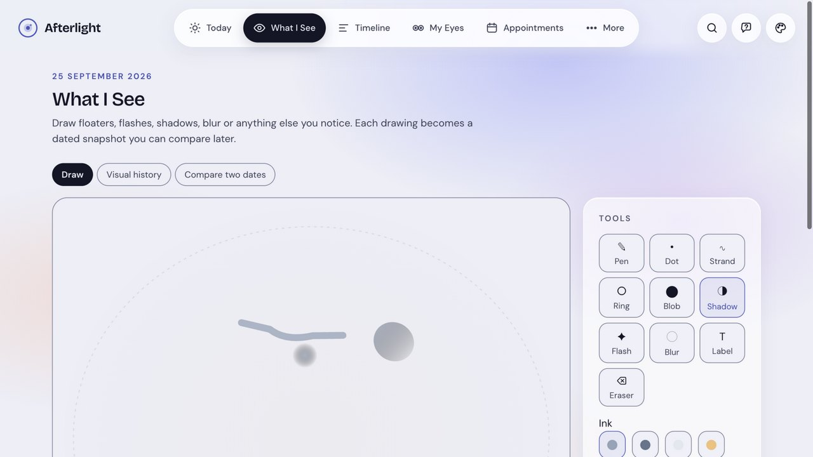
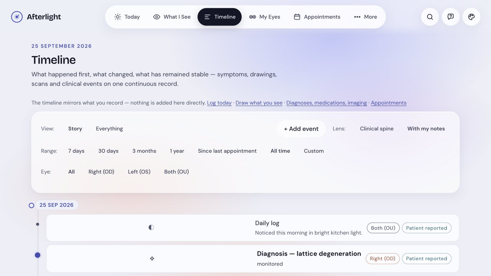
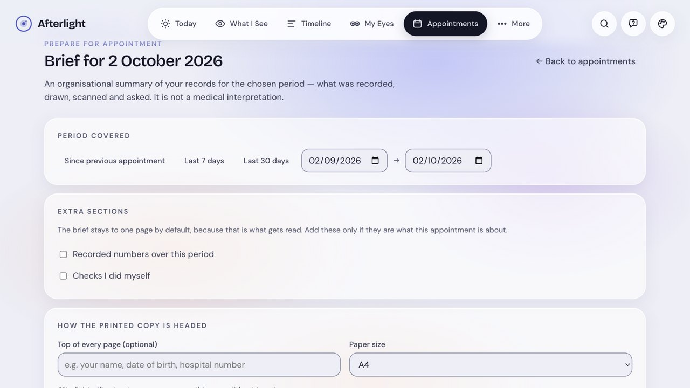
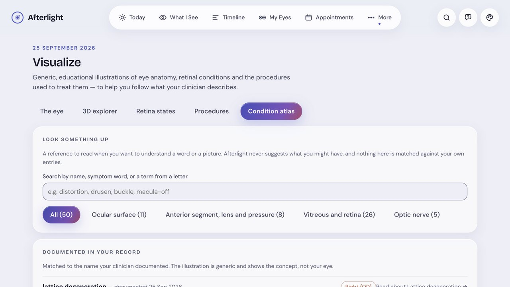
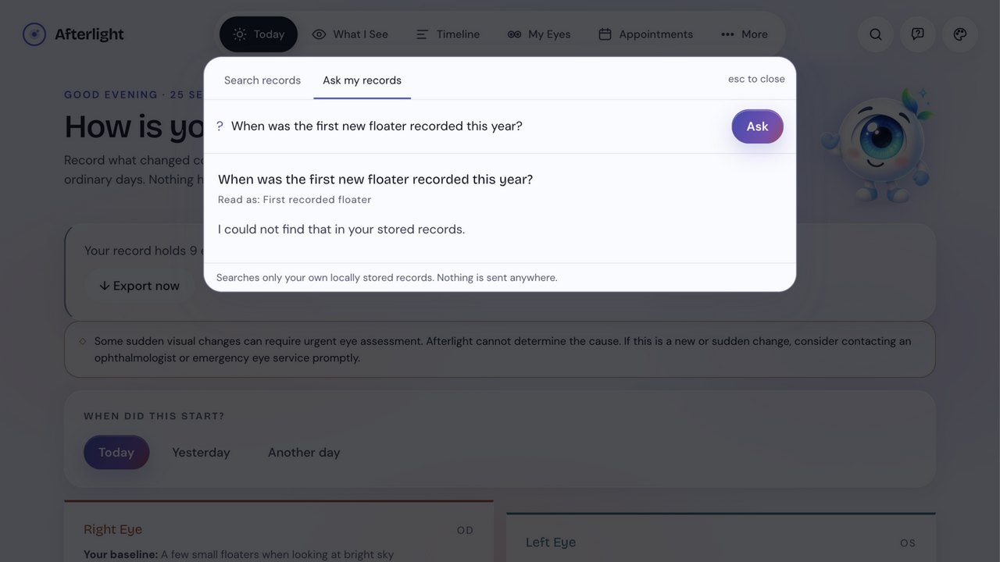
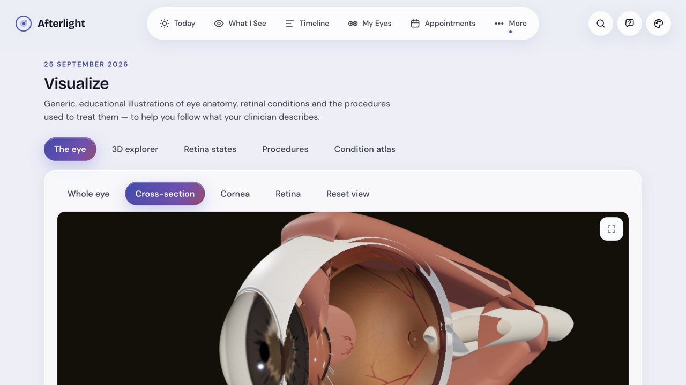

A local-first visual diary for people living with eye disease: what it does, who it serves, the rules it never breaks, and how it is built.
App version0.10.0 · schema 7
DocumentSpec 2.0
Date24 October 2026
StatusClinical wording unreviewed
Afterlight organises and compares; it does not diagnose, score risk, interpret imaging or replace a clinician. Anything in this document that appears to do so is a defect. This edition supersedes the User Stories & Technical Specification draft 1.0 of 9 September 2026. The repository remains the source of truth.
Clinical review outstanding
Every string that describes an eye condition, explains a home check or tells a person when to seek urgent care was drafted without clinical input. Until an ophthalmologist or optometrist signs off docs/clinical-review.md, the version stays below 1.0.0 and npm run release refuses to tag.
How to read this document
Chapters 1–5 describe the product: who it is for, what it promises, and what each screen does. Chapters 6–16 describe the system that keeps those promises. Chapter 17 lists what is unfinished. Figures are drawn for this document from the code as it stands on branch fix/find-charts-and-3d-freeze; numbers come from a clean npm run verify on 24 October 2026.
For product & clinical readers
Chapters 1–5, 11, 12 and 17. They cover the promise, the boundaries and the open sign-offs.
For engineers & agents
Chapters 3 and 6–16. Read AGENTS.md before the first edit; this document summarises it but never overrides it.
01
At a glance
Facts & figures
Afterlight is a patient-owned, longitudinal eye-health record. It captures what a person sees between clinic visits, keeps their clinical evidence on the same timeline, and turns that continuous record into a one-page brief a clinician can read in about a minute. It runs entirely in the browser, with no account and no server.
0
network requests at runtime: no backend, account, analytics or CDN
<30 s
target for the daily check-in on Today
9
routes, from Today to Settings
19
IndexedDB stores, schema version 7
6
provenance types, shown on every record
50
conditions in the generic atlas, plus 13 condition profiles
685
unit tests in 54 files, plus 106 end-to-end tests
95.5 KB
initial JavaScript, gzipped, against a 120 KB budget

FIG 1.1 Today, the screen people see every day. It asks one question with two large answers; everything else in the app is built from those answers.
The product in one paragraph per audience
Audience
What Afterlight gives them
The person with eye disease
A calm, thirty-second daily habit that turns "I think it's been a bit worse?" into a dated, eye-specific record. They can draw what they see, keep their scans and letters, and walk into an appointment with a one-page summary.
The clinician
A one-page brief, on paper, as a PDF or on screen, that separates what the patient reported from what a clinic documented. Nothing to install, no account, no AI reading of their imaging.
The engineer or agent
A React 18 + TypeScript + Vite single-page app with two runtime dependencies (React and Three.js). It has a single store, entities written once, everything else derived, and a verify gate that fails the build when a principle is broken.
Vital statistics
Item
Value
Version
0.10.0 (held below 1.0.0 until clinical review) · data schema 7 · IndexedDB version 3
Runtime dependencies
react 18.3, react-dom 18.3, three 0.180 (only in the lazy Visualize chunk)
Platforms
Any modern browser on desktop and phone; installable PWA; fully offline once opened; single-file offline 3D explorer
Storage
IndexedDB on the device; files kept as original bytes; exports optionally encrypted with AES-GCM
Licence
MIT. Bundled fonts (Bricolage Grotesque, DM Sans) under the SIL Open Font License
02
Problem, people, promise
Why it exists
A person experiences their sight continuously; clinical care sees it in fifteen-minute snapshots twice a year. Between visits the patient is the only person watching their eyes, and by the time they are back in the chair their memory has collapsed into one sentence they do not trust.
The judging question for every feature
When the clinician asks "has it changed since last time?", does the patient have a real answer, a record instead of a guess?
Personas
Primary
Maya, 34
Retinal detachment and vitrectomy at nineteen; persistent right-eye floaters; retina clinic twice a year. Anxious about new floaters and flashes. Logs on her phone at night and prepares for appointments on a laptop. Wants calm, not reassurance.
Secondary
Sam, 68
Bilateral AMD, injection series in the left eye. Low vision: needs large type and high contrast. Does Amsler checks at home and wants them compared only when the conditions match. Prefers print and present mode to share links.
Recipient
Dr Ravi, retina clinician
Has ten minutes and will not open an app. Needs one page that makes clear what the patient reported and what the clinic documented. Will not trust an AI summary of imaging.
The daily loop
Everything Afterlight can do six months from now depends on one habit today. That habit is designed as a decision, not a form: one tap on an ordinary day, and only the fields the answer requires on a day that differs.
FIG 2.1 The daily loop. "No change" is a real data point, not an empty day. Suggestions on the form come only from the person's own history, never from a generic list.
What the loop makes possible later
Within the record
A timeline of everything, labelled by source
Per-eye baselines and floaters tracked as persistent objects
Descriptive charts of measurements and prescriptions
Search and a deterministic "ask my records"
At the appointment
A one-page brief of what changed in each eye since the last visit
The person's own questions, carried forward until answered
Print, PDF, present mode, or an encrypted extract of chosen dates
A QR card readable with no signal
03
The seven non-negotiables
Invariants
These are invariants, not preferences. Breaking one is a defect however good the feature is. Where a rule can be checked mechanically, the build checks it; where it cannot, the definition of done requires an explicit human check.
1
Local-first, no backend
No account, telemetry, analytics, third-party request or CDN asset at runtime. Data leaves only by explicit export, print or share.
Every record carries eye and source_type. Patient, clinician, device and extracted content stay distinguishable everywhere, including print and export.
Enforced · types, brief tests, guard
3
No diagnosis, no risk, no reassurance
The app organises and compares; it never interprets. Emergency guidance is one restrained sentence pointing to a real clinician.
Enforced · guard bans verdict & clinical copy
4
Missing data is shown as missing
"Not recorded" is never rendered as a normal result. A quiet log is never presented as a healthy eye.
Enforced · dashboard & brief tests
5
Nothing generic is the patient's anatomy
Every visualisation carries an unmissable "generic, educational, not your eye" boundary, louder the more realistic the render.
Enforced · GENERIC_MODEL_BOUNDARY checks
6
Calm
No alarm colour as decoration, no streaks, no guilt, no notification that would frighten someone at 2am.
Enforced · copy review, streak tests, themes
7
The daily loop stays under 30 seconds
Anything added to Today must remove equal friction elsewhere or be optional. Today is a decision before it is a form, and pages other than Today and Timeline are lazy-loaded so the loop opens fast.
FIG 3.1 Which check holds which principle. Every rule except "calm" has at least one mechanical check; calm is held by tests that forbid streaks and verdict words plus a human reading of the copy.
04
The product, surface by surface
Nine routes
The app is one hash-routed page with nine destinations. Today and Timeline are in the first download; everything else loads on demand. ⌘K search and the ? "ask my records" panel are available from every route.
FIG 4.1 Navigation map. The two filled routes ship in the initial chunk; the guard fails the build if any other page is pulled into it.
Surface
What it does
Key rules
Today
The daily question with two large targets; a dashboard of the last fourteen days, latest acuity and quick routes to draw, check, add a document or open the model eye.
Missing days are "missing", never "fine". Calm continuity sentence or nothing.
What I See
Visual-field canvas with pen, dot, strand, ring, blob, shadow, flash and blur tools. Any two dated drawings for an eye overlay or sit side by side.
patient_drawn; labelled as a drawing, never a retinal image; described in words.
Timeline
Every record on one chronology, filterable by eye, type and dates. A story view weights the clinical spine (diagnoses, surgery, imaging, appointments) above daily observations.
Derived, never stored. Windowed with "show earlier".
My Eyes
Each eye as its own patient: baseline and revisions, diagnoses, procedures, medications, measurements, prescriptions, floaters as persistent objects, and descriptive charts.
Glasses and contact-lens prescriptions are never one series.
Checks
Amsler grid, card-calibrated distance vision and contrast checks, compared only with the person's own earlier attempts.
Cannot save without distance, lighting and correction.
Originals kept as bytes; extracted metadata unconfirmed until a person confirms it.
Appointments
Visits, a running list of questions, and the flagship Prepare for appointment brief with print, PDF, present mode, QR card and encrypted share.
Patient and clinic content never share a list.
Visualize
3D eye from real millimetre anatomy, retina states, procedures, a 50-condition atlas with a severity slider, and a patient-view simulator.
Generic boundary everywhere; atlas never ranked against symptoms.
Settings
Four themes, eight colour palettes, four type sizes, motion and glare comfort, export/import/test-backup, demo data, changelog, safety copy.
Preferences live in the record and survive export.

FIG 4.2 What I See: marks on a visual-field canvas.

FIG 4.3 Timeline story view: the clinical spine reads first.

FIG 4.4 Preparing a brief: period, optional sections, print heading.

FIG 4.5 Condition atlas: a reference someone navigates, never a suggestion.
05
User stories
Nine epics
Every story is written so its acceptance criteria can be checked by running the app or a test, not by opinion. All stories below are Must and implemented in 0.10.0.
E1Daily record · Today
US-1.1
Log an unchanged day in one tap, so that weeks of quiet days become evidence that a later change is new.
Two large targets · "Nothing different today" writes a dated DailyLog with no_change · no further fields · today shows as recorded after reload.
US-1.2
Record a change against my usual baseline: eye, symptom, comparison, optional severity and note.
Form appears only after "Something changed" · eye required · comparison scale same / slightly more / much more / fewer / different / new · severity labelled as the person's own number · suggestions only from own history.
US-1.3
Date an entry by when the change started, not when I typed it.
Yesterday and a date picker · stored date_time is onset.
US-1.4
See calm continuity without streak shame.
No streak, flame or badge · gaps described as fine · sentence is silent when there is nothing worth saying.
US-1.5
Receive restrained urgent-assessment guidance when I log a sudden symptom.
Sudden floaters, flashes, curtain or vision drop show one short notice pointing to an ophthalmologist or emergency eye service · no probability or diagnosis.
E2Visual diary · What I See
US-2.1
Draw what I see on a visual-field canvas.
Eight tools with size and opacity · tagged patient_drawn and an eye · labelled as a drawing, not a retinal image.
US-2.2
Overlay two dates so drift becomes visible.
Any two dated drawings per eye overlay or sit side by side · no verdict stated.
US-2.3
Read every drawing as words.
Automatic description (summary + per-mark detail) used as alt text, in search and in the brief.
E3Timeline · E4My Eyes
US-3.1
See everything in one chronology.
Derived from entities · type, date, eye and provenance badge on every row · eye, type and date filters · windowed history.
US-4.1
Keep a separate baseline per eye, with history.
Independent right and left profiles · text and optional drawing · dated revisions.
US-4.2
Track diagnoses, procedures, medications, measurements and prescriptions per eye, with sources.
eye + source_type + timestamps on each · "Not recorded" for missing values · unit- and method-aware measurements · glasses and contact lenses charted apart.
US-4.3
Track a recurring floater as one object.
FloaterObject with first seen, appearance, status, baseline flag and drawings · new events link to it.
E5Imaging & documents
US-5.1
Store the originals of scans and letters.
Original bytes in the files store · records link to files · object URLs released.
US-5.2
Confirm metadata before it becomes fact.
Hints are document_extracted, confirmed: false · ambiguous dates offer both readings · unconfirmed items stay out of the brief · unreadable files kept with a plain explanation.
US-5.3
Compare two OCTs side by side.
Same-eye selection · presentational only · no AI reading of the scan.
E6Appointments & the brief
US-6.1
Prepare a one-page brief of what changed since the last visit.
Selectable period · per-eye new / more / unchanged / less · questions, drawings, clinical events · patient and clinic content never in one list · unconfirmed extracts excluded.
US-6.2
Carry a running list of questions for my doctor.
Questions are records with status pending / asked / answered / follow-up · appear on the brief.
US-6.3
Put the brief on paper or on a screen in the room.
Deterministic PDF, base-14 fonts · black-and-white print · present mode with wake lock · scoped share with counts shown first · patient-generated footer on every page.
E7Search & Ask · E8Education · E9Access & backup
US-7.1
Search every record from the keyboard.
⌘K · filters such as eye:left type:floaters after:2026-06 · symmetric clinical ↔ everyday synonyms · typo tolerance on long words only.
US-7.2
Ask my own record and get cited answers.
Deterministic, no model · every answer cites entries · explicit "I could not find that in your stored records."
US-8.1
Explore generic anatomy and procedures.
Boundary on every view · cosmetic personalisation only · three loads only in Visualize.
US-8.2
Browse a condition atlas without being diagnosed.
Never surfaced from symptoms · field loss fades, never black · retinal location inverts to field location.
US-9.1
Use the app with low vision.
Four themes including two high-contrast · type to 200% with reflow · 44px targets · meaning never by colour alone.
US-9.2
Export and restore my whole record.
Checksum, counts and date span · preview before import · replace or merge · optional AES-GCM · test-backup without writing · calm weekly nudge.
US-9.3
Try demo data safely.
Every demo record has demo: true · removable in one action.
Explicit refusals
Not backlog items, and recorded so they are never re-argued as features: diagnosing or ranking conditions against symptoms · risk scores, probabilities or "your vision is declining" · interpreting OCT or fundus images · reassuring someone that a quiet log means healthy eyes · any backend, cloud sync or analytics · becoming a general EMR or telemedicine platform · bundling a runtime OCR or language model that fetches from the network.
06
Architecture
Layers · boundary
A single-page React application with no server. Entities are written once to IndexedDB. Everything a person reads (timeline, indexes, briefs, search results, charts) is computed from those entities, never stored as a second copy of the truth.
FIG 6.1 System architecture. Pages talk only to the store; engines are pure functions over its data; the database layer is the only code that touches IndexedDB. The three exits on the right are the only paths by which data leaves, and each happens only when the person asks.
The write path
FIG 6.2 A save resolves at the IndexedDB commit, not before it (verification item V-009). Rows on screen change only after the data is durable, so a crash can never show a record that was not stored.
Every record type lives in lib/models.ts, and every clinical or observation record stores the same spine: id, created_at, updated_at, eye, source_type and an optional demo flag. The timeline, search and the brief read the stored value; none of them infers provenance from a record's type. The guard fails the build if a dated record type is added without source_type.
FIG 7.1 Entity map: the record types grouped by whose account they are, and the id links between them.
The six provenance types
source_type
Shown as
Rule
patient_reported
Patient reported
What the person noticed and wrote. Never presented as a clinical finding.
patient_drawn
Patient drawing
A representation of what someone sees; never a retinal image.
clinician_reported
Clinician documented
Copied from a clinic letter or report; never presented as the person's impression.
device_measurement
Device measurement
A reading with unit and method (e.g. IOP method, acuity notation); clinic and home readings are never one series.
document_extracted
Extracted from document
Read from a filename, PDF or DICOM. confirmed: false and out of the brief until a person confirms it.
ai_generated
AI-generated summary
Reserved for optional future summaries; never a diagnosis channel. Unused in 0.10.0.
Notable shapes
SymptomEntry
Eye, symptom type, baseline_comparison (same, slightly more, much more, fewer, different appearance, new), optional 0–10 severity, onset date_time, note, and links to a floater, drawings and an appointment.
Prescription
Sphere, cylinder, axis and acuity held separately for the right and left eye (the record's own eye is "both"), with lens: glasses | contact_lenses | not_recorded. Prescriptions entered before the type was asked were migrated to "type not recorded" rather than guessed (schema 6).
SelfTestResult
Amsler, distance-vision or contrast result plus mandatory TestConditions: distance, lighting and correction. Without them a check is not comparable with anything.
Measurement
Value, unit and method, with a confirmed flag. Acuity is normalised to logMAR for charting while the original notation is kept for display.
08
Persistence & migrations
IndexedDB · archive
The record exists in one place: an IndexedDB database named afterlight on the person's device. That makes integrity the first security property. If the data is lost or silently corrupted, there is nowhere else to restore it from.
Stores
FIG 8.1 The nineteen object stores in IndexedDB version 3 (DB_VERSION), carrying data schema 7 (SCHEMA_VERSION).
Schema history
FIG 8.2 The data schema has moved six times. Each migration is a pure function, tested, and run once after a pre-migration backup.
Export & import
Archive v2: canonical JSON, SHA-256 checksum, per-store counts and date span.
Optional encryption: AES-GCM with PBKDF2-SHA256, 250,000 iterations. No recovery if the passphrase is forgotten, and the app says so.
Import always previews first; replace or merge (newest updated_at wins).
Test-backup validates a file without writing anything.
The error boundary offers export even if the UI has crashed.
Safety rails
Quota failures surface through saveStoredFile, never silent loss.
Multi-store writes go through snapshot writes and serialised meta patches, avoiding races.
Each object URL pins a scan in memory, so they are created with storedFileURL and released with releaseFileURL.
A calm weekly nudge appears when the last backup is old, and never nags.
Demo records carry demo: true and are removed in one action.
09
The derived engines
brief · search · ask · trends
The engines read the store through query.ts, which sits on cached indexes. None of them stores its results, and none of them may judge. They state counts, dates, values and differences, and they cite where each came from.
The appointment brief
FIG 9.1 From record to brief. One document model feeds every renderer, so what is printed, saved and presented can never disagree. Patient-reported and clinic-documented content is split before any layout happens.
Search
⌘K over symptoms, notes, documents, diagnoses, procedures and imaging metadata.
Field scoping: eye:left type:floaters after:2026-06.
Clinical ↔ everyday synonyms in both directions (OCT ↔ tomography).
Typo tolerance only on long words, so short clinical terms stay exact.
Explainable ranking: every hit carries a why.
Trends & charts
Numeric series (acuity in logMAR, IOP, prescriptions) described by date, value and arithmetic difference.
No thresholds, verdict words ("worsening", "stable") or good/bad colours; the guard fails on verdict language.
Clinic readings and home checks are never one line; glasses and contact lenses are never one series.
Every chart has a table equivalent.
Ask my records

A deterministic intent grammar, not a language model: when did X first appear, how often, when last, what did a measurement do over a period.
Every answer cites the entries it came from.
When the record cannot answer: "I could not find that in your stored records."
A property test proves no answer contains a number the record does not support.
10
Documents & ingestion
Nothing read is a fact
People arrive with stacks of PDFs, scans and letters. Afterlight keeps every original exactly as given and reads what it can as suggestions. A date from a filename or a laterality from _OD is never a fact until a person says so.
FIG 10.1 The ingestion path. PERSON_CONFIRMED is the only place in the code that writes confirmed: true; the guard fails the build on a bare confirmed: true anywhere in the ingestion path.
Imaging
OCT, fundus photos and other scans kept as original bytes, with thumbnails made in a worker (WebP or JPEG).
Two OCTs of the same eye side by side or with a slider. The comparison is presentational; a clinician's interpretation is shown if one was recorded.
No automated reading of any image is ever presented.
Text recognition (OCR)
A registered-recogniser seam exists; no engine is bundled.
A runtime download would break non-negotiable 1, and bundling one costs about 10 MB. See docs/ocr.md.
Anything a future recogniser reads would enter as document_extracted, unconfirmed.
11
Leaving the device
Three exits, all local
Data leaves only when the person asks, by exactly three paths: print, a generated PDF, and an encrypted extract. All three are produced locally, and every page they produce says what it is, so a page separated from the rest still says it is not a clinical record.
Path
How it works
Guarantees
Print
print.css loads after the screen styles and produces a black-and-white page, with provenance written as words because colour may not print.
Footer on every page; A4 and Letter.
Generated PDF
pdf.ts is an in-repo writer using only the PDF base-14 fonts. Drawings are rasterised at print resolution by briefexport.ts.
Pure and deterministic: no clock, locale or randomness, so the same brief gives byte-identical files.
Encrypted extract
share.ts builds an ordinary archive of a chosen date range plus a descriptor, encrypted with AES-GCM under a four-word passphrase given in person.
Imports through the same tested code as a backup; the passphrase never travels with the file.
QR card
qr.ts encodes a short plain-text summary (byte mode, versions 1–20, levels L and M) to be scanned off the screen with no signal.
Plain text, and labelled as plain text; verified byte-exact against an independent decoder.
Present mode
The brief one section at a time, in large high-contrast type, keeping the screen awake.
Nothing leaves the device.
Share scope, decided before a file exists
FIG 11.1 The default share scope. Sensitive categories are opt-in individually, and the person sees exactly what is in the file, and what is not, before it is made.
The footer
Every printed, generated or shared page carries PATIENT_GENERATED_FOOTER: "Patient-generated record, produced by Afterlight from this patient's own entries and from documents the patient holds. Patient-reported items are the patient's own descriptions of their experience. This is not a clinical record, not a measurement, and not a diagnosis." Its wording is on the list that needs clinical sign-off.
12
The eye engine & atlas
engine/ · lazy
Visualize helps a person follow what their clinician describes. It is built from real anatomy in millimetres, and it is generic by construction: it never shows the person's own eye, and it says so on every view.

FIG 12.1 The 3D cross-section, rendered from engine/anatomy/dimensions.ts. Three.js loads only when this page opens (about 1.4 MB gzipped, outside the initial budget).
A condition is a parameter delta, not a picture
FIG 12.2 Conditions as parameter deltas over the normal eye. That is what makes severity a slider and keeps every view consistent with real anatomy.
Simulator rules, enforced by tests
FIG 12.3 The two physical rules of the simulator, and the product rule that keeps the atlas from behaving like a diagnosis.
Standalone explorer:npm run build:standalone produces a single offline file, EyeExplorer-engine.html, under 5 MB.
Personalisation (iris colour, pigmentation) is cosmetic, and the boundary text is part of the canvas's accessible name.
Asset pipeline: a Blender bake track is documented in docs/asset-pipeline.md but not run; assets remain procedural.
13
Accessibility & design system
Built for low vision
The people using Afterlight have eye disease. Accessibility is a product requirement enforced by tests, not advice: a person with reduced acuity or contrast sensitivity must be able to complete the daily loop without a sighted helper.
FIG 13.1 Themes and palettes. Palettes are taste only: none carries meaning, none is used for eyes or provenance, and the high-contrast themes ignore them so their contrast ratios never move.
Requirements
Type from --fs-* tokens only, in four sizes: Normal, Large (125%), Larger (150%), Largest (200%), with reflow and no horizontal scrolling.
Colours from theme tokens; every new colour must pass contrast.test.ts in all four themes.
Interactive targets at least 44 px; focus never removed; focus trapped and restored in dialogs.
Meaning never carried by colour alone; provenance is always also a word.
Reduced motion, glare comfort and dimmed imagery as explicit preferences, as well as prefers-reduced-motion.
Canvas and charts have real text equivalents (describe.ts, table views).
How it is tested
axe-core runs over every page, every dialog, every theme and the largest type scale in npm run test.
A keyboard-only journey covers the daily loop end to end.
ESLint's jsx-a11y rules are errors, not warnings.
Playwright runs desktop Chromium and an iPhone 13 WebKit profile, including offline.
Deliberately not shipped
Voice entry: the browser speech API sends audio to a third party. Operating-system dictation works instead.
Type
Bricolage Grotesque for headings, DM Sans for text. Both bundled locally under the SIL OFL; nothing is fetched.
14
Performance
Budgets · benchmarks
The daily loop must open quickly on an ordinary phone, and a ten-year record must still feel instant. Both are budgets the build enforces, not aspirations.
FIG 14.1 Bundle budgets from npm run bundle on 24 October 2026. The guard also fails the build if a lazy page is pulled into the entry chunk.
≈ 35 ms (isolated) · 61 ms (inside the full suite)
< 400 ms
Search, warm
≈ 20 ms (isolated) · 87 ms (inside the full suite)
< 150 ms
Index build, brief
milliseconds; built once per data change and cached on the data object
budgets loose enough to catch quadratic regressions
Known fragility
The warm-search assertion failed once (162 ms) when the machine was busy with other work. It passes comfortably in isolation. The budget measures wall-clock time, so it can fail under heavy CPU contention; see chapter 17.
Other performance rules
The timeline renders a window (about 60 days) with an explicit "show earlier".
Thumbnails are generated off the main thread in image.worker.
Object-URL leak guards: each URL pins a whole scan in memory, so it is released with releaseFileURL.
The service worker precaches a content-hashed shell, so the app opens and records offline.
15
Privacy & security
By architecture
Afterlight's privacy is not a policy; it is the absence of anywhere for data to go. There is no server, so nothing can be transmitted, breached or subpoenaed from one. The remaining risks are all on the device, and the design addresses them in order of harm.
Threat model, ranked by harm
Risk
Why it matters
Mitigation
Data loss
The record exists nowhere else. Clearing browser data deletes it permanently.
A wrong date or eye is worse than a missing one, because a clinician may act on it.
Writes resolve at commit; migrations are pure and tested; extracted data unconfirmed by default.
Over-sharing
A share file could carry more than intended.
Narrow default scope, counts shown before creation, guard on defaultScope.
Exposure of an export
A backup file may be stored somewhere less private.
Optional AES-GCM with PBKDF2 (250k iterations); passphrase given in person.
Third-party leakage
A single font, script or image request would reveal use of an eye-disease app.
Guard on source; nonetwork on built output; verified zero external requests end to end.
What nonetwork checks
It reads the builtdist/ and site/ files and fails on anything a browser would load from a third party: a src, a <link href>, a url(), an @import, a worker, a socket or a fetch. A URL inside a string (an ordinary link someone may choose to follow) is listed but allowed, because following a link is a choice, not a request.
The honest trade-off
Local-first means nobody can restore a lost record. The app says this plainly, in onboarding and in Settings, and docs/keeping-it-safe.md covers backup, restore and moving to a new device.
Community & reporting
Clinical-accuracy and accessibility issues have their own forms and go to a person, never auto-closed.
Contributors are asked not to attach their own records, but to describe the shape of a problem instead.
No medical advice in issues (CODE_OF_CONDUCT.md); security reports per SECURITY.md.
16
Quality gate & release
verify · sign-off
Nothing is done until npm run verify passes clean. The gate is a single chain: any failing link stops it.
FIG 16.1 The verify chain, in order. On 24 October 2026 it passed clean: 685 of 685 unit tests in 54 files, guard 161 files with no violations.
Definition of done
npm run verify passes clean.
New behaviour has a test that would fail if it regressed.
Keyboard and screen-reader paths work for anything new.
No non-negotiable regressed, checked explicitly.
The demo dataset loads and still reads coherently.
Docs updated where a user or future agent would need them.
What only a human may approve
New clinical wording, and anything written for a clinician to read.
Safety and emergency copy.
Anything that weakens a non-negotiable, even behind a flag.
Deleting or migrating data in a way an export cannot reverse.
Publishing: deploys, releases, packages.
Marking the clinical review done.
Versioning
lib/changelog.ts holds VERSION and the patient-facing changelog; CHANGELOG.md is generated from it, and package.json must agree. Entries are written the way you would tell a patient what changed. The version stays below 1.0.0 until the clinical review is recorded, because 1.0 on a tool that touches eye care would imply that review happened.
Version
Date
Theme
0.10.0
unreleased
Getting ready for other people: guide, boundaries page, changelog in Settings, reporting routes, i18n groundwork.
0.9.0
9 Sep 2026
The brief ready for a doctor: PDF, print, provenance split, encrypted share, QR, present mode, bulk ingest.
0.8.0
8 Sep 2026
A record that answers questions: richer ask, clinical search, charts and tables, "same as last time?".
0.7.0
8 Sep 2026
Fifty-condition atlas with severity and a view-from-inside simulator.
0.6.0
8 Sep 2026
A real 3D eye from anatomical measurements; single-file offline explorer.
0.5.0
8 Sep 2026
Thirteen condition profiles; Amsler, vision and contrast checks; units and methods.
0.2–0.4
8 Sep 2026
Portable encrypted backups (0.2); four themes and text sizes, drawings in words, keyboard (0.3); thirty seconds a day on a phone, backdating, offline (0.4).
17
Open items & recent changes
As of 24 Oct 2026
Since the 0.10.0 changelog
Work after the September draft, on main and on the current branch fix/find-charts-and-3d-freeze (four commits ahead of main, pushed, not yet merged):
Date
Change
23 Sep
Liquid-glass redesign, three-colour palettes and the Today dashboard.
24 Sep
Phone tab bar at large text, explorer fits phones, no Diagnose tab in the app.
3 Oct
Reliability pass: writes commit before rows change, Today opens the saved entry, 3D drag no longer selects anatomy, 44 px inputs.
15 Oct
Record charts are easy to find; Visualize no longer freezes on open.
15 Oct
Edit prescriptions; chart sphere and cylinder per eye over time; reviewer fixes to charts, edit form and accessibility.
15 Oct
Glasses and contact-lens prescriptions kept and charted apart (schema 6).
24 Oct
Provenance stored on appointments, questions, procedures, medications and prescriptions (schema 7). Surgery entered at set-up is marked as the person's own account; the procedure form gains a Source field; search and the brief now agree with the timeline.
24 Oct
Migrations now save every store they change. Previously only floaters, measurements and files were written back, so the lens-type step of schema 6 never reached disk; schema 7 repairs it.
These changes are not yet described in the patient-facing changelog, which still lists 0.10.0 as the latest entry.
Open items
Item
State
Owner
Clinical review
Condition profiles, atlas lines, home-check instructions, safety copy, the clinician note and printed-brief wording all need ophthalmologist or optometrist sign-off. npm run clinical-pack prepares the 93-string pack.
Human, blocking 1.0
Hosted deploy
Intentionally manual; Pages workflow is dispatch-only.
Human
Physical print
The brief has not been checked on a real printer, A4 and Letter.
Human
Clinician read test
Someone who has never seen the app should read a brief against a clock.
Human
Real-device PWA
Install on a real iPhone and Android handset; iOS offline reload needs a manual check.
Human
OCR engine
Seam exists; engine not bundled for cost and offline purity.
Design review
Translation
Shell, daily loop, provenance and safety strings extracted; deeper pages not fully. Only English ships.
Engineering
Blender bake
Pipeline documented; not run in this environment. Engine remains procedural.
Engineering
Search benchmark
Warm-search assertion is wall-clock and can fail under heavy machine load (162 ms vs 150 ms seen once).
Engineering
Changelog
Post-0.10.0 work (above) still needs patient-facing entries.
Engineering
18
Glossary
Terms
Term
Meaning in Afterlight
Amsler grid
A square grid used at home to notice distortion or missing areas in central vision. Recorded with its test conditions.
Baseline
A person's own description of what is normal for one eye, with dated revisions. "More than usual" is measured against it.
Brief
The one-page appointment summary of what changed in each eye since a chosen date.
Derived
Computed from stored entities at read time and never stored, e.g. the timeline, indexes, briefs and search results.
DICOM
The standard file format for medical images. Afterlight reads its date, modality, laterality and institution as suggestions.
Floater object
One persistent floater tracked over time, so "still there" can be told apart from "genuinely new".
Generic boundary
GENERIC_MODEL_BOUNDARY: the statement on every visualisation that it is educational and not the person's own eye.
Guard
npm run guard: the source check that fails the build on network calls, banned clinical copy, verdict language and other invariant breaches.
logMAR
A scale for visual acuity used internally so charts can plot different notations together; the original notation is always displayed.
OD / OS
Right eye / left eye, from the Latin oculus dexter / oculus sinister.
OCT
Optical coherence tomography: a cross-sectional scan of the retina. Stored and compared, never interpreted.
Provenance
Where a record came from (its source_type), shown on every surface.
PVD
Posterior vitreous detachment: the gel inside the eye separating from the retina; a common cause of new floaters.
PWA
Progressive web app: installable from the browser and able to run offline through a service worker.
Vitrectomy
Surgery that removes the vitreous gel, often as part of retinal detachment repair.
Source of truth
This document summarises product intent and architecture. Where it and the repository disagree, the repository wins: AGENTS.md for the working agreement, docs/plan/ for phase briefs, lib/models.ts for the data model, and docs/clinical-review.md for the review status.
Afterlight · MIT licensed · built by a patient, for patients Your vision changes every day. Now your record does too.